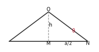
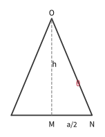
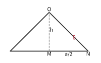

別冊練習問題 8 の解答 正四角すいの側面と底面のなす角
(1) 底面が1辺 \(8\) の正方形で、高さが \(3\) の正四角すいがある。側面と底面のなす角を \(\theta\) とするとき、\(\tan\theta\) と \(\cos\theta\) を求めよ。
断面を考える
底面の辺の中点 \(M\) と頂点 \(O\) を通り、底面の辺に垂直な平面で切る。側面と底面のなす角 \(\theta\) は、この断面の底角。

\(\tan\theta\)
底面の中心から辺の中点までは \(\dfrac a2=4\)、高さ \(h=3\)。
\[\tan\theta=\dfrac{h}{a/2}=\dfrac{3}{4}=\dfrac{3}{4}\]斜面の高さ・余弦
\[OM'=\sqrt{h^2+(a/2)^2}=5,\qquad \cos\theta=\dfrac{a/2}{OM'}=\dfrac{4}{5}\]【答案】
\[\tan\theta=\dfrac{3}{4},\ \cos\theta=\dfrac{4}{5}\]答
(2) 底面が1辺 \(10\) の正方形で、高さが \(12\) の正四角すいがある。側面と底面のなす角を \(\theta\) とするとき、\(\tan\theta\) と \(\cos\theta\) を求めよ。
断面を考える
底面の辺の中点 \(M\) と頂点 \(O\) を通り、底面の辺に垂直な平面で切る。側面と底面のなす角 \(\theta\) は、この断面の底角。

\(\tan\theta\)
底面の中心から辺の中点までは \(\dfrac a2=5\)、高さ \(h=12\)。
\[\tan\theta=\dfrac{h}{a/2}=\dfrac{12}{5}=\dfrac{12}{5}\]斜面の高さ・余弦
\[OM'=\sqrt{h^2+(a/2)^2}=13,\qquad \cos\theta=\dfrac{a/2}{OM'}=\dfrac{5}{13}\]【答案】
\[\tan\theta=\dfrac{12}{5},\ \cos\theta=\dfrac{5}{13}\]答
(3) 底面が1辺 \(6\) の正方形で、高さが \(3\) の正四角すいがある。側面と底面のなす角を \(\theta\) とするとき、\(\tan\theta\) と \(\cos\theta\) を求めよ。
断面を考える
底面の辺の中点 \(M\) と頂点 \(O\) を通り、底面の辺に垂直な平面で切る。側面と底面のなす角 \(\theta\) は、この断面の底角。

\(\tan\theta\)
底面の中心から辺の中点までは \(\dfrac a2=3\)、高さ \(h=3\)。
\[\tan\theta=\dfrac{h}{a/2}=\dfrac{3}{3}=1\]斜面の高さ・余弦
\[OM'=\sqrt{h^2+(a/2)^2}=3 \sqrt{2},\qquad \cos\theta=\dfrac{a/2}{OM'}=\dfrac{\sqrt{2}}{2}\]【答案】
\[\tan\theta=1,\ \cos\theta=\dfrac{\sqrt{2}}{2}\]答